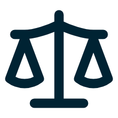
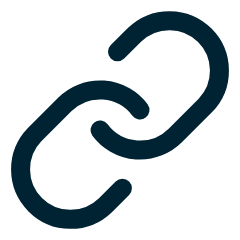

KOSTEN
Dit kost Eduface
€ 1.500
per maand, vooraf betaald
€ 18.000 per jaar, exclusief btw
Eerste 400 studenten
€ 3,75 per student per maand, samen € 1.500
Elke student daarboven
€ 3 per student per maand
WAT DE INSTELLING ERVOOR KRIJGT

Uniforme beoordeling
Elke opdracht wordt langs dezelfde criteria beoordeeld, door elke beoordelaar.

Integratie in NEO LMS
Opdrachten en cijfers lopen via NEO. Docenten en studenten werken in de omgeving die ze kennen.
Formatieve feedback voor elke student
Nu krijgt de helft van de studenten formatieve feedback. Met Eduface is dat iedereen.
50% → 100%
Business case Eduface · Academica University of Applied Sciences · concept
2